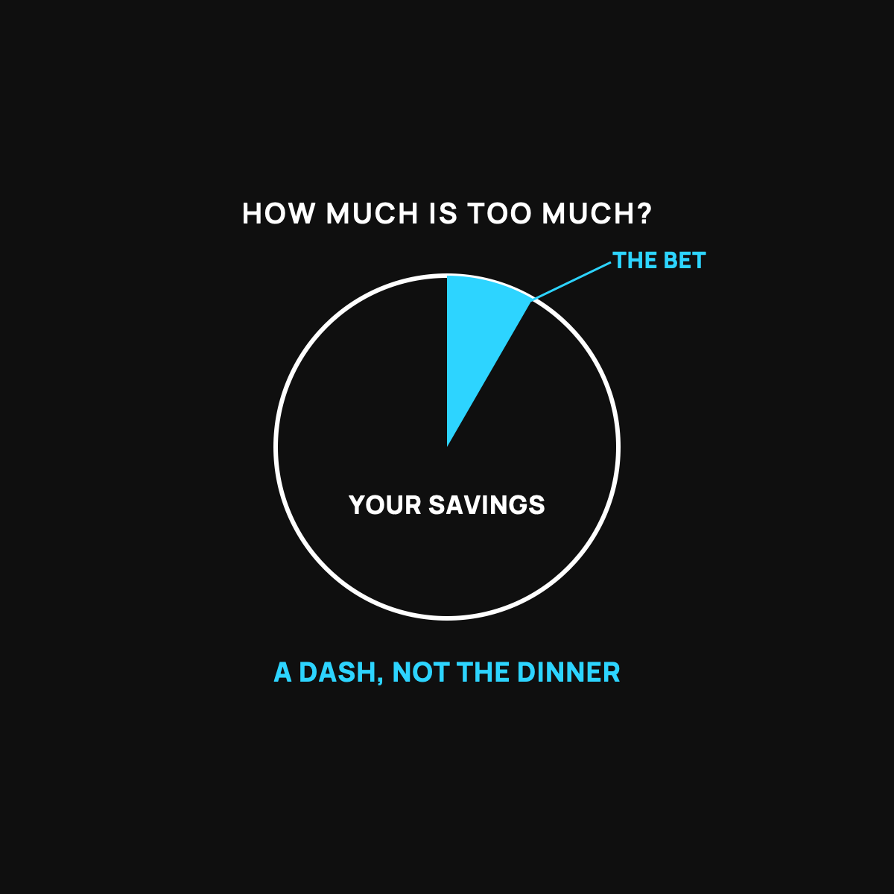

How Much Is Too Much? Sizing a Small Bet
Treat a swingy investment like hot sauce. A dash, not the dinner.
How much is too much? Any amount whose loss would touch your real life. Treat a swingy investment like hot sauce: a small dash on a plate that's already a full meal. Get the emergency fund and high-interest debt handled first, keep the bet small enough that a bad year is a shrug, and buy it slowly.

If you've decided to put a little money into something that swings around, like bitcoin, the very next question is the smart one: how much? Too little and it won't matter. Too much and one bad stretch could hurt your real life. Here's a plain way to think about the size, without anyone handing you a magic number.
Hot sauce on the meal
Think about hot sauce. A few dashes can make a good meal better. Empty the whole bottle on your plate and dinner's ruined, no matter how good the sauce is. The sauce isn't the meal. It's a small thing that adds flavor, and only in the right amount.
A risky, swingy investment is hot sauce. Your steady savings, your emergency fund, your bills, your retirement, those are the meal. A little hot sauce on the side can add something. Dumping your whole plate in it is how people get hurt. The goal is a dash, not a drowning.
The one rule that actually protects you
Forget picking the perfect percentage. Here's the rule that matters: only put in money that, if it went to zero tomorrow, would not change your life.
Say that out loud, because it's the whole game. Not money you'll need for rent. Not the emergency fund. Not next year's tuition. Money you could genuinely lose without a single real-world consequence. If losing it would mean a missed bill or a canceled plan, it's too much, full stop.
A sensible way to size it
For most regular people, that "wouldn't hurt me" amount lands somewhere small, often a single-digit slice of your savings, not half of it. There's no official number, and anyone who gives you one with total confidence is guessing. But the spirit is clear: small enough that a bad year is a shrug, not a crisis.
And you don't have to put even that in all at once. Sizing the bet small and buying it slowly are two separate protections that stack nicely. I wrote about the buy-slowly part.
Get the meal right first
Here's the order that keeps people safe. Get the meal on the table before you reach for the sauce. That means the boring stuff first: a small emergency fund, your high-interest debt handled, your bills covered. Hot sauce on an empty plate is just an upset stomach. Only once the meal's there does a small dash make sense. And keep the whole thing in the honest saving-versus-gambling frame.
The takeaway
How much is too much? Any amount whose loss would touch your real life. Treat a swingy investment like hot sauce: a small dash on a plate that's already a full meal. Get the boring basics handled first, keep the bet small enough that a bad year is a shrug, and buy it slowly. Flavor, not the whole dinner.
Questions I get about this
What percentage of my savings should go into bitcoin?
There's no official number, and anyone who gives you one with total confidence is guessing. For most regular people the "wouldn't hurt me" amount lands somewhere small, often a single-digit slice of savings, not half. Small enough that a bad year is a shrug.
What should I do before investing in anything risky?
Get the meal on the table first: a small emergency fund, high-interest debt handled, bills covered. Hot sauce on an empty plate is just an upset stomach. Start with the first $1,000.
Should I put the whole amount in at once?
No need. Sizing the bet small and buying it slowly are two separate protections that stack. I explain the buy-slowly part in A Little Each Week Beats Betting It All.

Written by David Dewese
Normal guy with a full-time job, wife, and kids. Spent twenty years pursuing music and creative ventures before starting a family. Sharing tips and tricks on how to thrive while living on an artist's income. Not a financial advisor. More about me.
New here?
Normaltown USA is plain-English money and healthcare help for normal people, written by a regular guy with a family of four. No jargon, no hype. Start here, or read the FAQ.